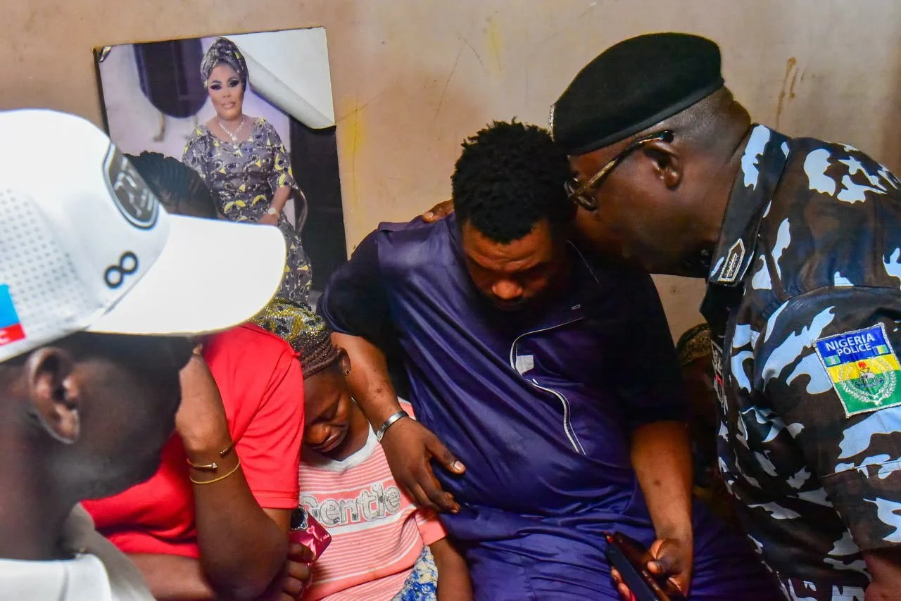

Police bullet kills girl, injures another in Lagos

A police officer has been detained after his firearm struck two girls during an operation in the Nosamu area of Ajegunle, Lagos. One of the girls, identified by police as Omole Taiwo, died after being taken to hospital; the other is receiving medical care and is in stable condition. The incident occurred on Thursday, November 5, between 9.30 pm and 10 pm, according to a statement issued by the Lagos State Police Command on Saturday.
The command said Assistant Superintendent of Police Omotayo Olajide discharged his firearm during a response to a reported clash between two rival groups, the Nosamu Boys and the Alayabiagba Boys. Police said the groups were reportedly fighting over toll collection and carrying cutlasses and other dangerous weapons. Both girls were taken to Ajeromi General Hospital. Taiwo was later transferred to the Lagos State University Teaching Hospital in Ikeja, where she died.
Olajide has been disarmed and detained, and the case has been transferred to the State Criminal Investigation Department. The police said the investigation would establish what happened and determine any appropriate legal or disciplinary action. Commissioner of Police Tijani Fatai visited Taiwo’s family to offer condolences and said no officer found responsible would be protected.
The police account does not clarify whether Olajide intentionally fired at the rival groups, whether the girls were caught in the line of fire or whether the weapon discharged unintentionally. The incident recalls a fatal shooting in Ajegunle in April 2019, when 20-year-old Ada Ifeanyi was killed and Emmanuel Akomafuwa was injured. An officer involved in that case was later dismissed after an investigation found he had abused his authority and used his firearm unlawfully.
Source: Punch